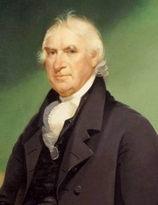

George Clinton
George Clinton was elected first governor of New York State in 1777. Except for 1795-1801 when he chose not to run, he held that office for the remainder of the eighteenth century. He returned to Albany again in 1802 and served until he was chosen vice-president of the United States in 1804. He served in Washington until his death in 1812.
As the longest tenured governor, Clinton was required to spend considerable time in Albany. Beyond mere residency, he was important to the city's history and also to our study of the people of colonial Albany on a number of significant levels. This biographical sketch is not comprehensive but intends to place this father of New York State in his Albany context. 
Son of an English emigré from Ireland, George Clinton was born downriver at Little Britain in 1739.
At the outbreak of the last so-called "French and Indian War," he joined the British army and was commissioned a lieutenant. Trained as an attorney, he served in a number of civil capacities in Ulster County and then was elected to the provincial Assembly where he was counted among the leaders of the colonial opposition to restrictive measures enacted by the British following the end of the last colonial war.
At the outbreak of hostilities in 1775, he already was serving in leadership positions vital to the American cause including Brigadier General of the militia and member of the New York Provincial Congress.
After continuing to provide mid-Hudson Valley leadership as resistance turned into revolution, he was elected first governor of New York State in 1777. He led what became a government on the run that first began meeting in Albany in 1781. At the same time, he held the rank of Brigadier General in the Continental army.
Although he spent little actual time in Albany during the war years, his published correspondence/papers represent major resources for understanding Albany's role in the crusade for American liberties. He had many Albany-based contacts and frequently was solicited by Albany people.
After the war, New York had no official state capital. The legislature met in a number of locations - probably most frequently in Albany. Beginning in 1797, Albany became de facto state capital and has been the permanent seat of state government ever since. Clinton's long tenure in the governor's office afforded him an unparalleled opportunity to shape the form and human composition of state govenment. Beyond the Council of Appointment, practically speaking most appointments to Albany-based state offices were initiated or cleared through the governor's office. In other words, George Clinton had considerable say in who would come to Albany to work for the state of New York.
Albany attorney Stephen Lush served as Clinton's aide-de-camp for many years. He is said to have been related to Albany patriot John Tayler as well.
We seek more specific information on George Clinton's Albany residency during his long tenure as governor. However, in 1790, the first federal census identified him as a resident of New York City. In July 1801, he took up residence in the State Street home (numbers 66-68) previously occupied by Governor Jay.
He probably did not live in Albany after being chosen vice president.
Portrait: Copy of one of at least four likenesses of George Clinton done by Albany artist Ezra Ames.
Study: Starting with but beyond the multi-volume publication of Clinton's papers relating to the Revolutionary War, his long tenure as governor also generated correspondence and other manuscripts involving a large number of prominent Albany personages. They may hold the key to placing this leader on the Albany community landscape.
You might follow this link to more information on Governor George Clinton on this website.